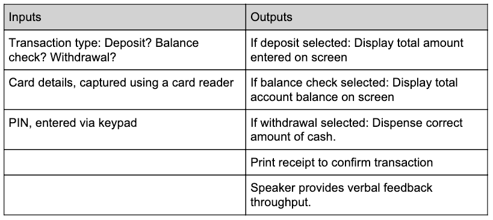

Thinking ahead is a method used when solving computational problems. It involves thinking about the inputs, outputs and preconditions of a solution to a problem. This allows developers to consider potential issues or difficulties that may arise when the software is used. By taking these problems into account, developers can create a more intuitive interface with the program.
Here is an example of the inputs and outputs for an ATM:
Preconditions are requirements that must be met before a program is executed. For example, any integers which are inputted into a function must be positive, so a check must be done to ensure all integers are positive. The precondition is that integers which are inputted into the function are positive.
Another example of thinking ahead is in caching. This classifies as thinking ahead because the CPU predicts that the instructions will be used again. A more advanced variation of caching is called prefetching. Algorithms predict which instructions are likely to be soon fetched and fetch them prematurely. By thinking ahead, less time is spent waiting for instructions to be loaded into RAM.